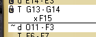

ThudBoard home | over ThudBoard | ThudBoard handleiding | download
ThudBoard - Handleiding
Een eerste begin
 ThudBoard is eenvoudig in het gebruik. Als je deze tekst moet lezen kan het
zijn dat ik die conclusie te vroeg getrokken heb.
ThudBoard is eenvoudig in het gebruik. Als je deze tekst moet lezen kan het
zijn dat ik die conclusie te vroeg getrokken heb.
Het scherm kan in drie secties onderverdeeld worden: het speelbord, de lijst
met zetten en de rest.
De volgende teksten gaan er van uit dat je ThudBoard gedownload en gestart
hebt, zodat de verschillende gebieden herkenbaar zijn. Als je dat nog niet
gedaan hebt, kijk dan tenminste naar de schermafdruk op de homepage
(klik op de afbeelding voor de volledige schermafdruk).
Het Thud Bord
Klik en sleep een stuk en laat het los op de plaats waar je het wilt hebben. Dit is nog niet het einde van de zet: je kunt het stuk nog verder verplaatsen, of evt. andere stukken slaan. Als je het stuk terugplaatst op z'n oorspronkelijke positie, dan wordt de zet niet gespeeld.
Als je het stuk op een ander stuk loslaat, wordt het betreffende stuk van het bord gehaald. Een andere manier om stukken te slaan is om ze te klikken nadat je je stuk verzet hebt. Als je met de muis over de verschillende stukken beweegt, zie je een X voor stukken die geslagen kunnen worden met een klik, en een kruis-wijzer aanduiding op het oorspronkelijke stuk om aan te geven dat je deze nog verder kunt bewegen.
De zet wordt pas beëindigd als je ergens op een lege plek op het bord (of buiten het bord) klikt.
De zetten-lijst
Klik op een willekeurige regel om de positie van het spel te zien nadat die zet gespeeld was. Normaal gesproken kun je van hieraf verder spelen, tenzij deze zet zich voor de opgeslagen lijn bevindt (aangegeven met het slot-ikoon). Om dit slot te verplaatsen selecteer je een regel, en als je dan 'Opslaan' kiest komt het slotje hier te staan. De geselecteerde lijn wordt gemarkeerd, en zal vanaf nu de frontlinie heten. Deze zet en alle zetten daarvoor zijn nu op slot.
 Wanneer je een nieuwe zet begint, zal de regel onder de front-linie gemarkeerd worden en aangeven wat er geklikt en gesleept wordt. Als de zet beëindigd wordt, zijn alle zetten die evt. na de frontlinie stonden vervangen door de nieuwe zet. Dit staat bekend onder het verkennen van alternatieve toekomsten.
Om naar de bord-positie te komen voordat er een zet gespeeld is, klik je op de naam van de veldslag boven de zetten-lijst. Als deze naam een tekst-ballon aan de linkerkant heeft, betekent dat dat deze veldslag commentaar bevat. Als dit niet getoond wordt kun je het aanzetten in het 'Opties' menu.
De lijnen boven en onder met de mini-pijtjes eraan kunnen gebruikt worden om door de regels te bladeren. Als het commentaar aanstaat, is er een tekstkader zichtbaar onder de onderste blader-lijn. Dit kader bevat het commentaar en kan vrij veranderd worden.
Hoe lees je een enkele regel: het eerste teken op de regel geeft aan of de zet een dwerg ('d'), een trol ('T') of de steen ('R', van Rock) is, gevolgd door de 'van-naar' coördinaten. Eventuele extra tekst geeft geslagen stukken aan, als coördinaten voorzien van een 'x' (bv. 'xF15'). Geslagen stukken worden onder de verplaatsing getoond en zijn geindenteerd. Sinds versie 1.0 zijn de dwergen-zetten voorzien van een zet-nummer. Sinds versie 1.4 kan de steen ook verplaatst worden, dit verhoogt het zet-nummer.
Kopiëren/Plakken in de zetten-lijst
Kopiëren/Plakken komt van pas als je via email, msn of icq o.i.d. speelt.
Door Control-c te toetsen kopiëer je de huidige frontlinie naar het
klembord.
Door Control-v te toetsen wordt geprobeerd de inhoud van het klembord te
plakken onder de huidige frontlinie. Dit kan mislukken als de zet op het
klembord niet uitgevoerd kan worden vanuit deze positie. De twee akties kunnen
ook uitgevoerd worden met behulp van de kopie-/plak-ikonen rechts op de
frontlinie. Merk op dat het plak-ikoon 3 verschijningsvormen heeft: uitgeschakeld
(geen Thud-zet op het klembord), gedeeltelijk uitgeschakeld (wel een Thud-zet op
het klembord, maar deze kan vanuit de huidige positie niet gespeeld worden) of
volledig ingeschakeld (de zet op het klembord kan nu gespeeld worden als je niet
in een deel van de veldslag zit wat op slot zit).
De rest
De rest bestaat uit een logo en een menu bovenin en een url onderin. Als je de url klikt wordt je browser gestart met de link naar de Thud website. Het menu bovenin heeft vier mogelijkheden. Dit zijn 'Bestand', 'Opslaan', 'Opties' en 'Help'.
Als je 'Bestand' klikt, kun je kiezen tussen 'nieuw', 'openen', 'opslaan als' en 'momentopname'. Hieronder vind je een lijst 'Recent Geopende Bestanden', waar je snel een veldslag kunt kiezen. 'Nieuw', 'openen' en 'opslaan als' werken zoals gebruikelijk. 'Momentopname' slaat de huidige positie van het bord op, zonder de hele zetten-historie (of toekomst). Dit doet verder niets met het huidige spel. Als je vanuit zo'n momentopname wilt gaan spelen kun je deze simpelweg openen via het Bestand menu.
Bestanden worden normaal gesproken opgeslagen in de 'battles' subfolder van de ThudBoard applicatie of in je persoonlijke folder (zoek naar ~/.thudboard/battles), maar ze mogen overal staan.
Het Opslaan menu zal de huidige veldslag opslaan, inclusief historie en toekomst en de huidige positie van de frontlinie. Die frontlinie is ook gelijk de plek tot waar de zetten op slot zitten.
Het Opties menu zet een aantal instellingen aan en uit. 'Coordinaten' geeft wel of geen coördinaten op het speelbord weer. 'Oplichten' toont de tegel waar de muis boven hangt in combinatie met het bijbehorende coördinaat. 'Score' geeft de geslagen-stukken of de overgebleven-stukken telling weer. 'Commentaar' toont of verbergt het commentaar tekstkader. De opties worden automagisch bewaard voor de volgende keer dat ThudBoard gestart wordt.
De Help opties geven deze handleiding, samen met de 'inhoud' en een 'over ThudBoard' sectie die wat meer info geeft over Thud en ThudBoard.
Je kunt de applicatie afsluiten door het venster te sluiten op de normale manier (bv. door de X in de titelbalk te klikken onder Windows),